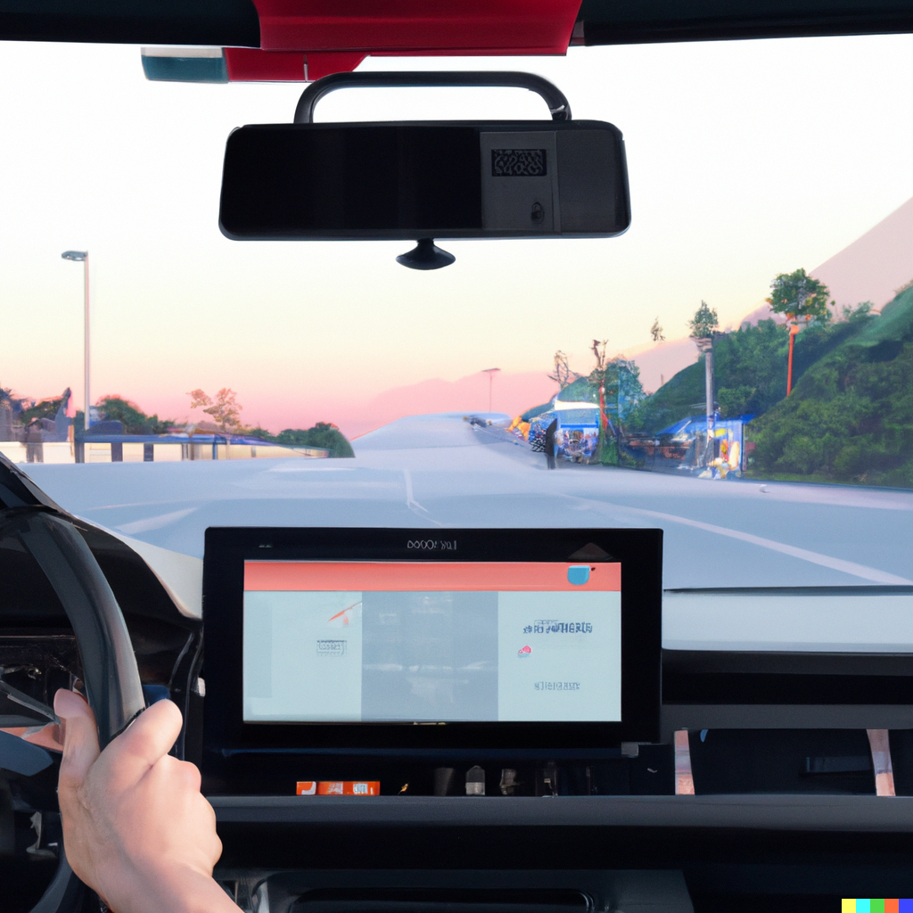
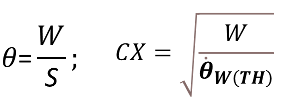

How do drivers perceive slow traffic on highways?
Imagine you are driving on a highway; the weather is beautiful and you are enjoying the tunes on the radio. You see a small figure farther down the road and after a few moments you know it is another car travelling much like you.

A few more seconds pass and you feel slight unease with the car dozens of meters away from you. Something is wrong but you don’t know what. May be the car is slower than the usual highway speed. Then, all of a sudden, you notice that the car is stopped in the middle of the road! Car’s brake lights are on but not too sharp in the broad daylight. You swerve to the other lane with no traffic, thinking what would have happened if you hadn’t.
This was perhaps an extreme example. Cars don’t just stop in the middle of highways. But situations like these do and can happen. Similar situations with slower lead cars happen everyday, where you need to safely overtake the car.
But how do you know that the car down the road is slow? How do drivers regularly overtake and change lanes so effortlessly?
These questions have always been important to answer in traffic flow and psychology studies because they are connected to road safety. Understanding how drivers perceive and make decisions is even more important today to improve self-driving technology.
This post introduces you to visual looming that help drivers perceive relative motion. Read on to learn how the Wiedemann car-following model utilizes visual looming to predict reaction behind a lead vehicle.
What is Visual Looming?

For most people, looking at this image would likely have an involuntary reaction - an effort to save them from the impending impact of the ball. But what exactly happens in your brain that tells you to save yourself from this looming threat?
Visual looming (or just looming) is a measure of the growth of an image of an object approaching you. This growth of the image happens at your eye, specifically retina, where a 2D (two-dimensional) image forms. The 2D image grows in size as an object gets closer to you. Since the approaching object looms over the eye, this process is called looming.
So, how is looming related to driving? As you gradually approach a slower lead vehicle, the 2D image of the rear of the lead vehicle grows on your retina. The animation below shows you that the width and height of the truck’s rear subtend visual angles (\theta) on your eye (you are in the red car). One way to quantify looming is to estimate the rate of change of a visual angle, called as angular velocity, measured in radians per second. Thus, angular velocity measures the speed of the image growth on your eye. The line chart at the bottom-right shows that angular velocity is not constant: the closer you get to the truck, the faster the image grows on your eye.

All of this happens on your eye without much cognitive processing. After all, drivers are not physicists who’d need to use euqations of motion to determine when they need to steer away to another lane or apply brakes to avoid collision. Even if drivers want to do that, they won’t be successful as they do not know the speed and distance to the lead vehicle.
Interactive example
In the following application, you can move ahead in time to see how the image of the lead car grows in size as the following car approaches it. The first plot shows the speed of the following car as it gets closer to a lead car with a constant speed (Moving LV) or zero speed (Stationary LV). The second plot shows the position of the gas pedal of the following car and the angular velocity.
In both figures above, you see that angular velocity increases with time. Researchers believe that there is some driver-specific value of angular velocity that is perceivable (just noticeable).
The value of angular velocity where drivers detect that a lead vehicle is slower than them is the threshold of angular velocity, \theta_{TH}.
In the Moving LV scenario above, move the Time slider to 89 s to see that the driver stepped-off the gas pedal (gas pedal position = 0) when angular velocity grew significantly. At this time, the angular velocity was about 0.0003 rad/s. Therefore, the threshold of angular velocity for this driver was 0.0003 rad/s.
Wiedemann car-following model
Wiedemann model divides the car-following process into four distinct states:
- Free-driving: Driver strives to drive at a desired speed.
- Approaching: Driver detects a slower lead vehicle based on angular velocity threshold (\theta_{W(TH)}) and slows down to avoid collision. Angular velocity can be estimated as the width of the lead vehicle divided by the distance to lead vehicle. Wiedemann model uses the parameter CX that has the following relation with the threshold of angular velocity.

- Following: Driver follows the lead vehicle at the same speed with small variation. Angular velocity threshold informs driver if they are getting too close to or loosing the lead vehicle.
- Braking: Driver applies brake if the distance to the lead vehicle gets smaller than the driver-specific safety distance.
Following are all the equations of the original Wiedemann car-following model. Want to learn more? Check out (Durrani, Lee, and Maoh 2016) and (Durrani and Lee 2019). Or contact me.
BMAX = BMAXmult \times (V_{MAX} - V \times FaktorV)
FaktorV = \frac{V_{MAX}}{V_{DESIRED} + FAKTORVmult(V_{MAX} - V_{DESIRED})}
BNULL = BNULLmult \times (RND4(i) + NRND)
AX = L + AXadd + (RND1(i) \times AXmult)
SDV = \left( \frac{DX - AX}{CX} \right)^2
CX = CXconst \times (CXadd + CXmult \times (RND1(i) + RND2(i)))
B(i)_{App} = \frac{1}{2} \times \frac{{DV}^2}{ABX - DX} + B(i - 1) + \frac{(1 - RND2(i)) \times (1 - 2 \times NRND)}{R(i)}
ABX = AX + (BXadd + BXmult \times RND1(i))\times \sqrt{V}
CLDV = SDV \times EX^2
EX = EXadd + EXmult \times (NRND - RND2(i))
OPDV = CLDV \times (-OPDVadd - OPDVmult \times NRND)
SDX = AX + EX \times (BXadd + BXmult \times RND1(i))\times \sqrt{V}
B(i)_{Emg} = \frac{1}{2} \times \frac{{DV}^2}{AX - DX} + B(i - 1) + BMIN \times \frac{(ABX - DX)}{(ABX - AX)} + \frac{(1 - RND2(i)) \times (1 - 2 \times NRND)}{R(i)}
BMIN = -BMINadd - BMINmult \times RND3(i) + BMINVmult \times V
Since most of the driving happens in following and approaching states, driver reactions are assumed to be initiated when the threshold of angular velocity is reached.
Interactive example (free-driving to approaching)
The application below enables you to control a few model parameters of the Wiedemann model to reproduce the actual speed of a following car that is approaching a slow/stopped lead car. Try changing the desired speed, BMAXmult, and CX to make the predicted speed (dashed line) as close as possible to the actual speed (solid line).
As you change these parameter values, notice how that changes the measures above the plot. You see:
Sum of Squared Error: Mean difference between the actual and predicted distance to the lead vehicle
Predicted and observed reaction times: Reaction time was estimated as the time when the driver transitions from the free-driving state to the approaching state. These states were manually annotated in the actual data and were also predicted by the Wiedemann model based on the angular velocity threshold
AV threshold: Angular velocity threshold estimated from the observed and predicted data
Visual looming is important
For many, many years into the future, humans will be driving manual/partially automated vehicles. Therefore, it is essential that we understand what influences drivers’ decision making and how can we make all road users safe. I hope this post made you realize the importance of looming (angular velocity) in driving. Hopefully, you’d recognize that looming cannot be ignored as long as a driver is involved even for a small part of the journey.
In a future post, I will show you an alternative but seemingly more realistic model of drivers’ decision making in approaching slower vehicles that also utilizes looming. See you then.